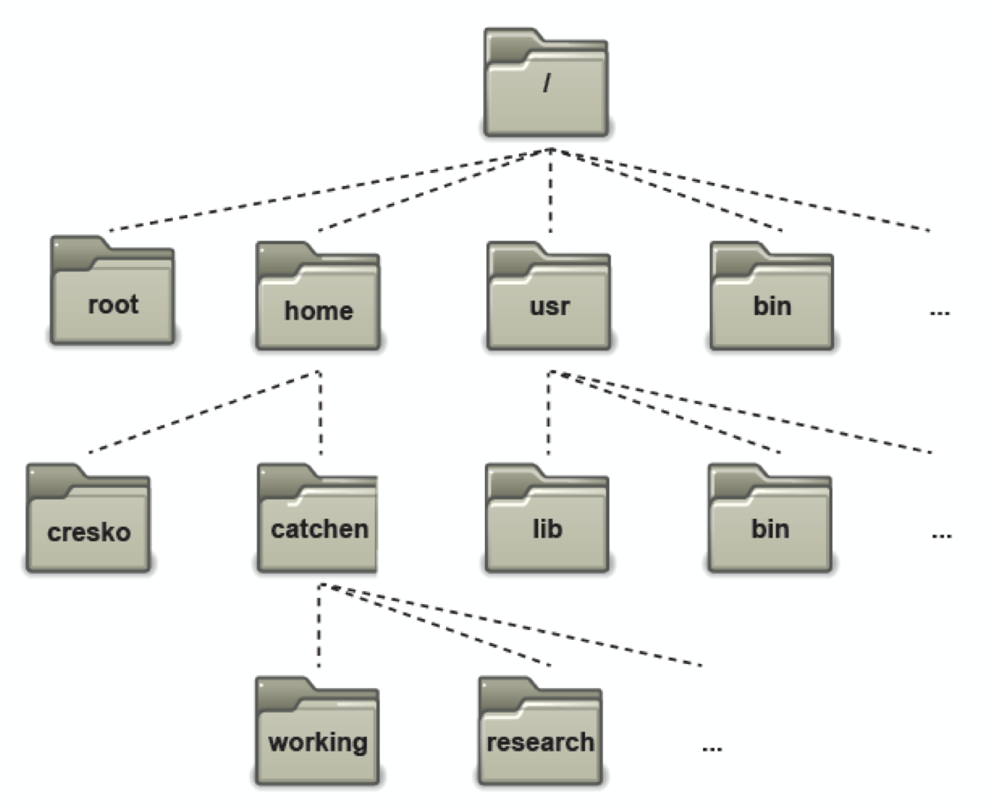

Introducción a la Terminal#
La terminal es una interfase para realizar operaciones por vía de comandos de texto. Estos se utilizan porque es una forma rápida, versátil y a veces la única vía de comunicación con el computador. La terminal funciona con un programa Shell que interpreta los comandos y los ejecuta.
La terminal es una alternativa al ambiente gráfico (GUI, “Graphical User Interphase”) pero mas sencillo para dar instrucciones…sin embargo hay que saber como darlas para que el sistema responda.
Instalación#
En sistemas operativos Linux y Mac, la terminal ya está incorporada y los comandos que se describen aquí funcionan para ambos. Para los usuarios de Windows hay varias formas de acceder:
Comandos Básicos#
ls (listar)#
Cuando se entra al sistema, el directorio donde uno se encuentra es el home. Para saber que hay dentro de home, escribimos
ls
El comando ls lista el contenido de directorio de trabajo (current directory).
Pero ls no lista realmene todos los archivos, solo aquellos que son visibles. Los archivos que comienzan con un punto (.) y que se conocen como ocultos contienen informacion importante de configuracion que no debe ser alterada, a menos que sepamos bien que estamos haciendo.
Ahora listemos todos los archivos del directorio, incluyendo los ocultos:
ls -a
ls es un ejemplo de un comando con opciones: -a es un ejemplo de una opción. Las opciones cambianel comportamiento del comando.
Estructura de los directorios#
Todos los archivos están agrupados en la estructura del directorio y esta estructura es jerárquica.
Para saber donde nos encontramos en la estructura del directorio usamos el comando “print working directory”
pwd
Crear directorios#
mkdir (make directory)#
Utilizamos este comando para crear un subdirectorio en el directorio donde estamos
mkdir biocomp_clase1
Para ver el directorio que acabamos de crear escribimos
ls
Cambiar directorios#
cd (change directory)#
Utilizamos este comando para cambiar del directorio donde estamos a otro directorio. Para “entrar” al directorio que acabamos de crear escribirmos
cd biocomp_clase1
Escriba ls para ver qué hay en el directorio (debería estar vacío).
Para volver al directorio parental escribimos
cd ..
Si seguimos escribiendo cd recurrentemente vamos subiendo en la jerarquía de directorios
~ (home)#
Si escribimos cd sin puntos llegamos al directorio home. Este se denota también como ~
ls ~/
Copiar archivos#
cp (copy)#
El comando para copiar un archivo arch1 en el directorio actual a un archivo identico pero nombrado arch2 es cp arch1 arch2
Ahora vamos a tomar un archivo de internet y a usar el comando para copiarlo en el directorio que creamos. Primero, cd al directorio biocomp_clase1:
cd ~/biocomp_clase1
Para descargar un archivo se puede utilizar wget (en linux, Mac pero no en Cygwin) o curl (linux, Mac, Cygwin). Si utiliza wget el archivo queda guardado en el directorio donde se dió el comando, con el nombre original
wget https://users.cs.duke.edu/~alvy/courses/unixtut/science.txt
También se puede utilizar curl, y en este caso se debe especificar el nombre con el que quedará guardado el archivo con la opción -o
curl https://users.cs.duke.edu/~alvy/courses/unixtut/science.txt -o science2.txt
Usando [TAB]#
[TAB] es muy útil en la línea de comandos de Linux: completa automaticamente los comandos que se utilizan. Intenta, por ejemplo, $ cd ~/bioc y después TAB. Esto también ayudará a hacer sugerencias en caso de múltiples opciones.
Moviendo archivos#
mv (move)
mv arch1 arch2 mueve o cambia el nombre de arch1 a arch2 y por lo tanto solo queda un
Vamos a mover el archivo science.bak a al folder ejercicios creado previamente.
Primero, cambia de directorio a biocomp_clase1. Despué escribe:
mv science.bak ejercicios/
escribe ls y ls ejercicios para ver si funcionó.
Remover archivos y directorios#
rm (remove), rmdir (remove directory)
Para borrar (remover) un archivos, usamos el comando rm command. Como ejemplo, vamos a crear una copia del archivo science.txt y borrarlo.
dentro del directorio biocomp_clase1, escribe:
cp science.txt tempfile.txt
ls
rm tempfile.txt
ls
Puedes utilizar el comando rmdir para remover el directorio (aségurate primero que esté vacío). Intenta remover el directorio backup. No podrás porque linux no te permitirá remover un directorio que no está vacío. Para borrar un directorio (que no esté vacío) con sus subdirectorios puedes usar -r (recursivo):
rm -r /path/directory
Este comando pedirá confirmación para algunos archivos que sean importantes. Si estás absolutamente seguro de este paso, puedes añadir el comando -f (f de forzar):
rm -rf /path/delete
Mostrar los contenidos de un archivo en la pantalla#
cat
Este comando imprime el texto completo en la terminal, si este es muy largo solo se verán las últimas líneas
cat science.txt
less
El comando less va mostra los contenidos de un archivo en la terminal desde el comienzo del archivo. Escribe:
less science.txt
Presiona la [barra-espaciadora] si quieres continuar hacia abajo, y escribe [q] si quieres terminar la lectura.
head
El comando head muestra las diez primeras lineas de un archivo en la pantalla:
head science.txt
luego escribe:
head -5 science.txt
Qué diferencia hizo el -5 en el comando?
tail
El comando tail muestra las últimas 10 lineas de un archivo:
tail science.txt
Accediendo el texto
less
Usando less, se puede buscar dentro de un archivo de texto palabras (un patrón). Por ejemplo, para buscar dentro del archivo science.txt la palabra “science”, escribimos:
less science.txt
después, aún en less, escribe slash [/] seguido por la palabra a buscar:
/science
Y [enter]. Escribe [n] para buscar por la siguiente ocurrencia en el texto.
grep
grep busca en el archivo palabras o patrones dentro de un texto:
grep science science.txt
Como se puede ver, grep muestra cada línea que contiene la palabra science.
Ahora intente escribir la palabra con mayúscula:
grep Science science.txt
El comando grep es “case sensitive”, distingue entre S y s.
Para ignorar distinciones entre mayúsculas y minúsculas, utilice la opción -i:
grep -i science science.txt
Para buscar una frase o patrón, se debe encerrarla entre comillas. Por ejemplo, para buscar spinning top, escriba:
grep -i 'spinning top' science.txt
Otras opciones de grep son:
-vmuestra las líneas que NO contienen el patrón-nprecede cada línea que contiene el patrón con el número de línea-cmuestra el número total de líneas que contienen el patrón
Intente las diferentes opciones y sus combinaciones. Se pueden utilizar mas de una opción al mismo tiempo! Por ejemplo, el número de líneas sin la palabra science or Science es:
grep -ivc science science.txt
Manipulación de archivos#
Para guardar lo que se imprime en pantalla en un archivo se utiliza el comando > seguido por el nombre del archivo donde se guardará el resultado. Por ejemplo, para guardar todas las líneas que contienen la palabra “science” (sin importar si es mayúscula o minúscula) escribimos:
grep -i science science.txt > science_grep.txt
Abra (por ejemplo usando less) el archivo “science_grep.txt” y cuente el número de líneas. Ahora escriba:
wc -l science_grep.txt
El número debe ser igual al que contó ya que wc (word count) con la opción -l cuenta el número de líneas. La opción -m cuenta el número de caracteres.
Este mismo resultado lo obtendríamos en el archivo original con el siguiente comando:
grep -i "science" science.txt | wc -l
Aquí combinamos los dos comandos anteriores usando | (“pipe”) que utiliza el resultado del primer comando como input del segundo
Conclusiones de la línea de comando#
La línea de comando de linux es muy poderoso. Tan poderoso que la gran mayoría de los servidores y super computadoras del mundo funcionan con los sistemas linux (sin interfase gráfica, i.e. usando solamente la línea de comando).
Aquí navegamos por algunos ejemplos simples, pero esto es solo un “abre-bocas”. Por ejemplo, el comando grep es muy importante y útil para buscar patrones, y wget para bajar archivos. Ambos comandos mucho mas rápidos que si se usaran la interfase gráfica.
Para cada comando hay un manual de uso que se puede acceder con man y el comando que se desea buscar, por ejemplo man grep despliega todas las opciones para este comando con ejemplos de uso.
Para profundizar sobre linux hay varios tutoriales, por ejemplo https://ryanstutorials.net/linuxtutorial/ o https://swcarpentry.github.io/shell-novice/